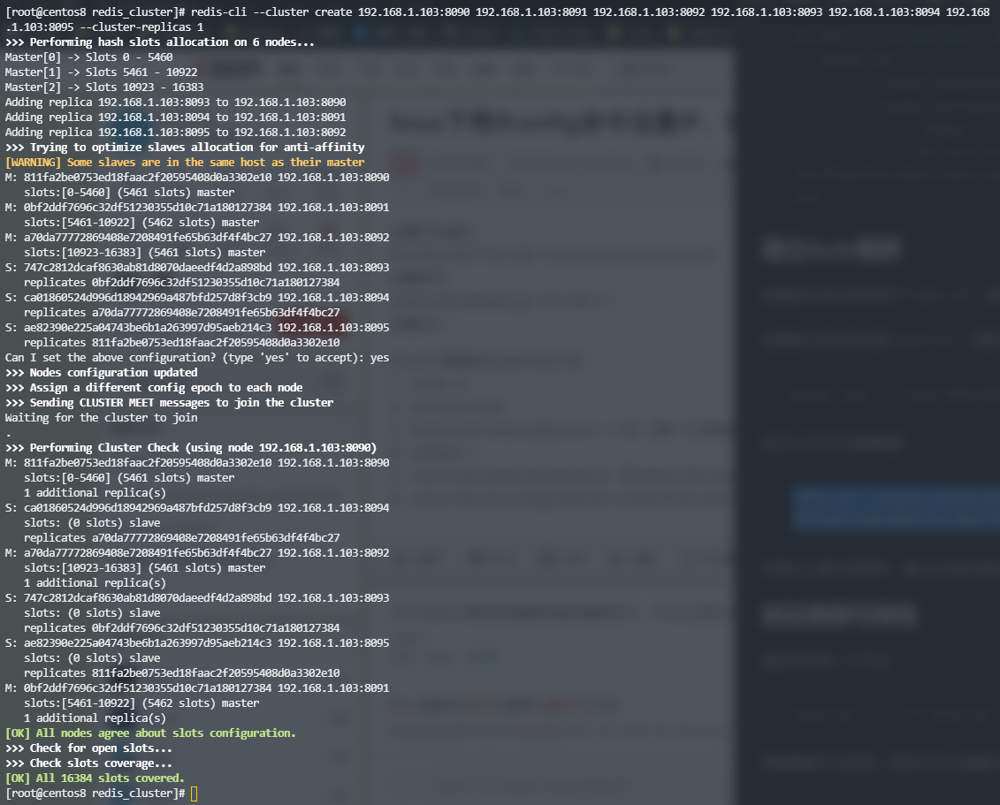
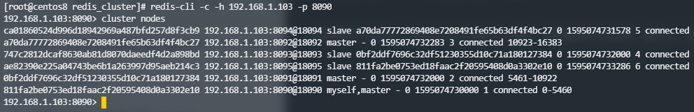

本机环境
- 操作系统：CentOS8，由Vmware虚拟机创建，网络使用桥接模式
- Docker版本：19.03.12
- Redis版本：5.0.3
前期准备
安装并启动Docker
1
2
| sudo yum install docker -y
sudo service docker start
|
获取Redis镜像
创建集群配置文件模板
首先创建一个文件夹，用于存放配置文件模板，稍后也用于存放Redis集群数据文件
1
2
| mkdir ~/redis_cluster
cd ~/redis_cluster
|
新建模板文件vim redis_cluster.tmpl，并写入以下配置（注意此处的Cluster IP，需要根据自己的宿主机IP地址来填写）：
1
2
3
4
5
6
7
8
9
10
11
12
13
14
15
16
17
18
19
20
21
22
23
24
25
26
27
28
29
30
31
32
33
34
35
36
37
38
39
| # Redis Port
port ${PORT}
# Protected mode off
protected-mode no
# Cluster enable
cluster-enabled yes
# Cluster node conf
cluster-config-file nodes.conf
# Timeout
cluster-node-timeout 5000
# Cluster IP
cluster-announce-ip 192.168.1.103
# Cluster Port-range: 8090-8095
cluster-announce-port ${PORT}
cluster-announce-bus-port 1${PORT}
# Enable append only back up mode
appendonly yes
# Back up frequency
appendfsync everysec
# Disable aof comprass sync
no-appendfsync-on-rewrite no
# Aof rewrite percentage
auto-aof-rewrite-percentage 100
# Aof rewrite size
auto-aof-rewrite-min-size 512mb
# Disable back up
save ""
|
新建批量生成单个Redis配置的脚本
vim mkconf.sh，随后填入以下内容，此处我的Redis集群端口从8090开始到8095，可根据需要自行修改
1
2
3
4
5
| for port in `seq 8090 8095`; do \
mkdir -p ./${port}/conf \
&& PORT=${port} envsubst < ./redis_cluster.tmpl > ./${port}/conf/redis.conf \
&& mkdir -p ./${port}/data; \
done
|
然后赋予可执行权限并运行该脚本
1
2
| chmod +x mkconf.sh
./mkconf.sh
|
新建批量生成Docker容器的脚本
vim mkcontainer.sh，随后填入以下内容
1
2
3
4
5
6
7
| for port in `seq 8090 8095`; do \
docker run -d -it \
-v ~/redis_cluster/${port}/conf/redis.conf:/usr/local/etc/redis/redis.conf \
-v ~/redis_cluster/${port}/data:/data \
--restart always --name redis-${port} --net host \
--sysctl net.core.somaxconn=1024 redis redis-server /usr/local/etc/redis/redis.conf; \
done
|
建立Redis集群
如果宿主机已经安装了redis-cli，就不用进入到容器内部了，可以直接在宿主机上操作
如果宿主机没有安装redis-cli，则执行以下命令随便进入一个容器中
1
| docker exec -it redis-8090 bash
|
执行以下命令创建集群
1
| redis-cli --cluster create 192.168.1.103:8090 192.168.1.103:8091 192.168.1.103:8092 192.168.1.103:8093 192.168.1.103:8094 192.168.1.103:8095 --cluster-replicas 1
|

出现以上图中的询问，输入yes回车即可，自此Redis集群就创建成功了
验证集群可用性
登录其中的一个节点
1
| redis-cli -c -h 192.168.1.18 -p 8090
|
查看集群节点信息，同时也可以试着写入数据，能查看到节点信息，能写入、读取数据，表示集群搭建成功
